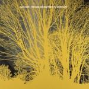
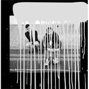
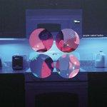

Music Reviews
-
Imbogodom And They Turned Not When They Left
While Imbogodom are successful in building a unique, desolate panorama, it’s hard to see this sustaining attention as an album in its own right.
David Zammitt reviews... -

Dustin Wong Dreams Say, View, Create, Shadow Leads
The former Ponytail guitarist presents a sophomore record of endearing, if faintly repetitive, loops and melodies.
Gabriel Szatan is daydreaming... -

Howler America Give Up
Minneapolis natives Howler step away from the sound of their city's other native sons to pursue the giant, free-spirited, "rock revival" sound that many before them have attempted, with varying degrees of success.
Forrest Cardamenis reviews... -

Dan Sartain Too Tough to Live
A paean to the Ramones and every other punk band of the 70's you can think of? What's not to love?
James McKenna reviews... -

Nada Surf The Stars Are Indifferent To Astronomy
A band with a minor 90s hit and mediocre output since then release the second in a sequence of albums that could redeem their career.
David Hogg reviews... -
Whistle Peak Half Asleep Upon Echo Falls
Calm down, guys. Okay? Seriously. All this energy is difficult to tolerate, okay? There’s only so much I can handle with a pair of headphones and one ear for each. Are you trying to deafen me? (This is sarcasm, if you couldn’t tell.)
Sean Caldwell reviews... -

Laura Gibson La Grande
A fifth album of understated folk. Is it only whispered singing and acoustic guitars?
James McKenna reviews... -

Alcest Les voyages de l'âme
Following the much celebrated Écailles de Lune, French multi instrumentalist Neige nestles a comparative follow up that is just as spiritually attuned.
Juan Edgardo Rodríguez would like to dream more often... -

The Big Pink Future This
2nd album of noisy electro-pop from the London duo. Future This? About 25 years ago this, more like.
David John Wood goes back to the Future... -

The Internet Purple Naked Ladies
For all of Odd Future’s daring, this album’s biggest hindrance is a lack of ruthlessness at crucial moments.
David Zammitt reviews...